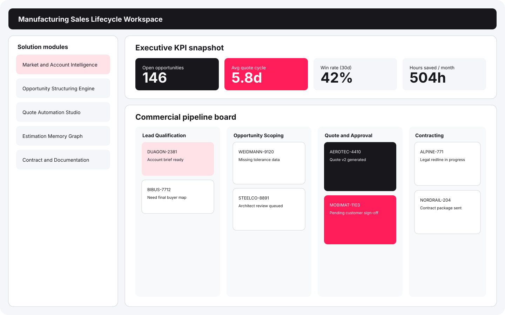
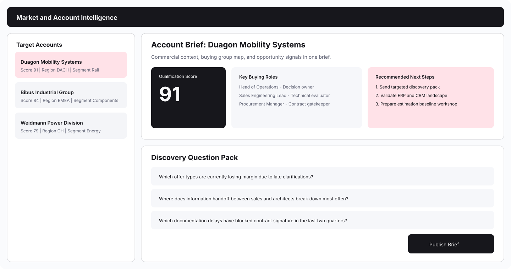
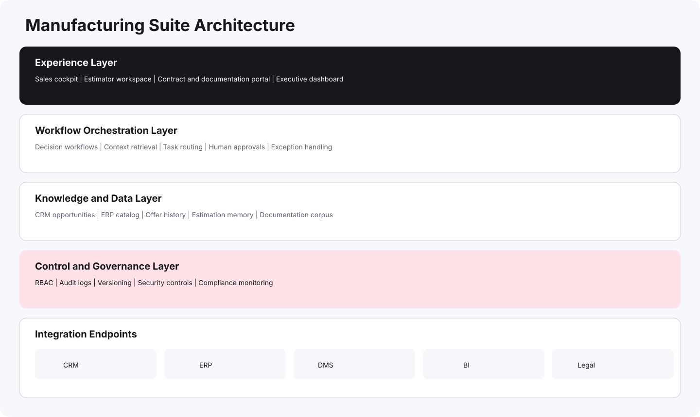

Revenue speed
Shorten opportunity-to-offer time to capture more deals and reduce drop-off.
MANUFACTURING SUITE
Deploy modular digital solutions for qualification, quotation, contracting, and delivery handover. Start fast with the highest-impact module, then scale across teams.

WHAT LEADERS CARE ABOUT
Shorten opportunity-to-offer time to capture more deals and reduce drop-off.
Reduce manual estimation errors and improve pricing consistency.
Keep knowledge inside systems instead of inside a few experts.
Add new digital capabilities in phases without breaking current teams or tooling.
MODULAR SUITE
Each module is independent. Pick one module for a pilot or combine multiple modules into one end-to-end flow.
Target account analysis and qualification briefs.

PLATFORM ARCHITECTURE
Deploy on your infrastructure or private cloud. Each module can be enabled independently.

BUSINESS IMPACT
-35% to -60%
-25% to -45%
+20% to +40%
High
Set your current monthly opportunity volume and average engineering hours per quote.
140 opportunities/month
12 hours per quote
Estimated hours saved with suite: 504 h/month
IMPLEMENTATION MODEL
Map process bottlenecks, prioritize high-impact modules, define KPI baseline.
Deploy 1-2 modules with real users, real data, and integration into current systems.
Roll out module set across teams with governance, training, and operations playbook.
EXECUTIVE DECISION SUPPORT
Start with one plant, one region, or one sales team. Expand only after KPI validation.
Critical commercial and contractual outputs stay under expert approval.
Role-based access, audit history, and model change control from day one.
Weekly operational metrics and monthly executive KPI review built into delivery.
LET'S BUILD YOUR SUITE
Share your current offer process and we return a prioritized module roadmap with delivery phases.